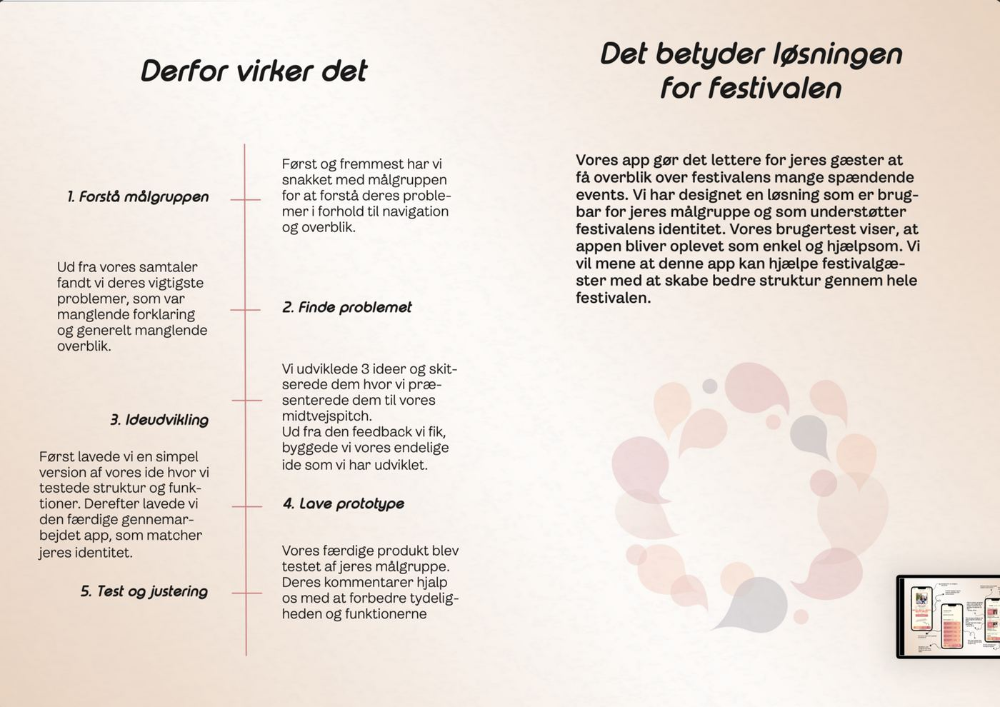
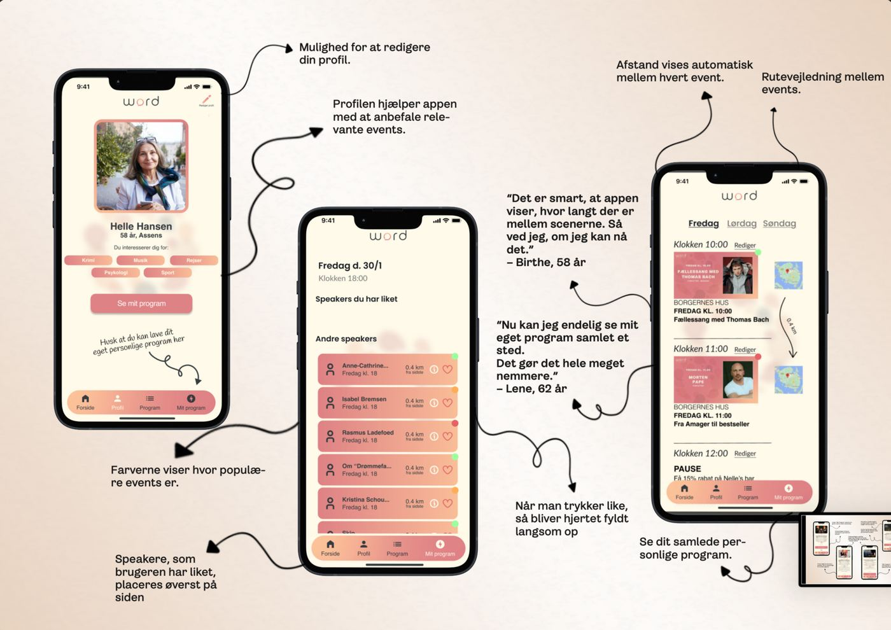
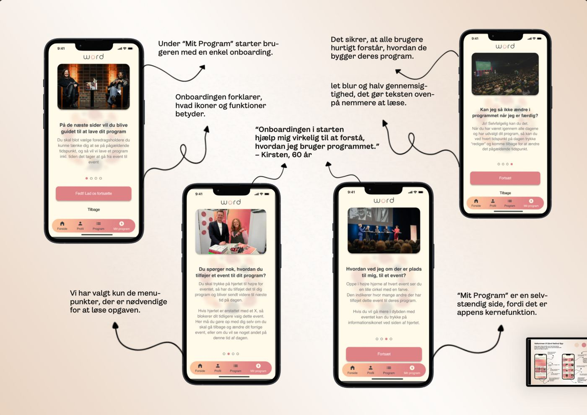
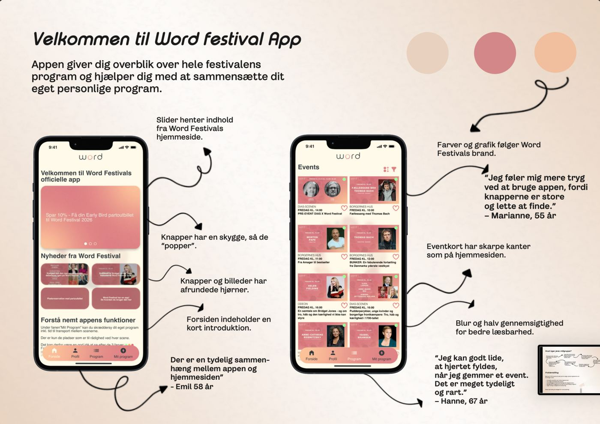
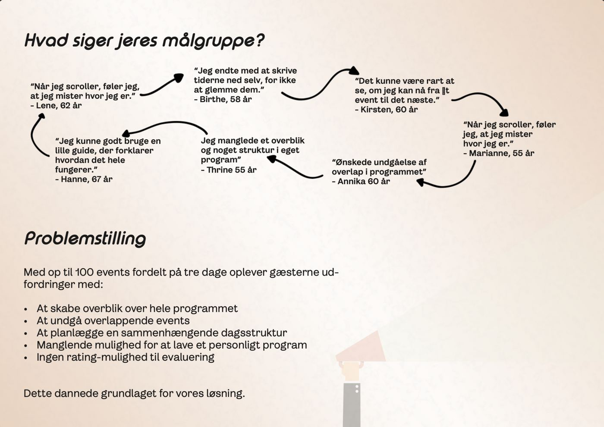
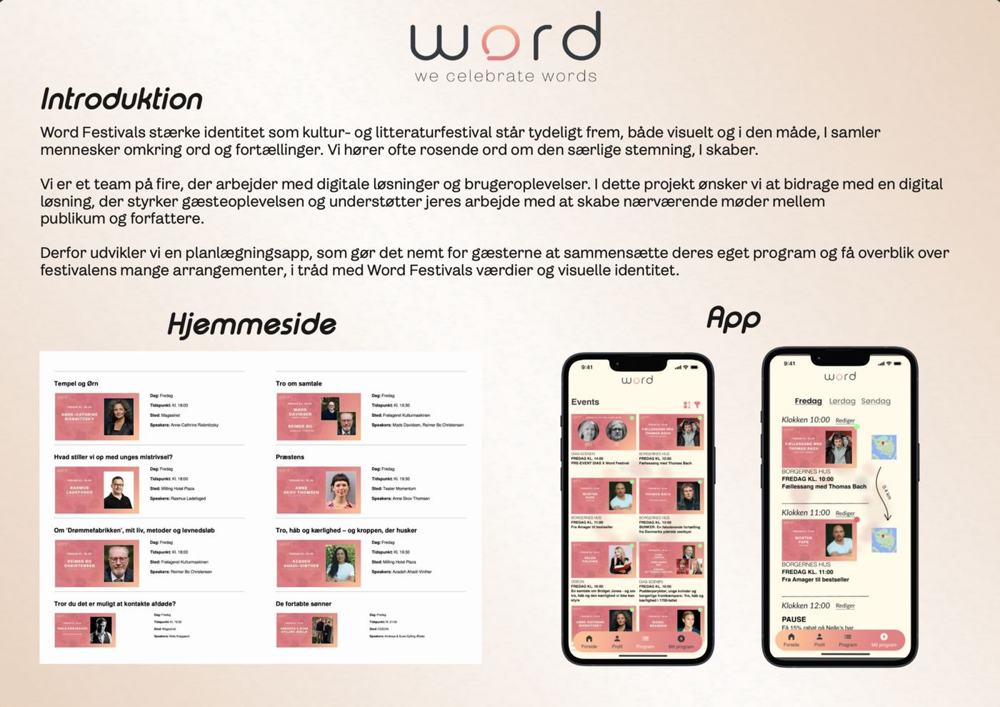

1. Semester
Installationsprojekt
Programplanlægger til Word Festival
I dette projekt udviklede vi en digital løsning til Word Festival – en kultur- og litteraturfestival med over 100 events fordelt på tre dage. Festivalens omfattende program kan virke uoverskueligt for mange gæster, og formålet med projektet var derfor at skabe en løsning, hvor brugerne nemt kan sammensætte deres eget personlige program. Målet var at udvikle en enkel, brugervenlig og overskuelig planlægningsapp, der gør det lettere at navigere mellem talks, foredrag og arrangementer.
Word Festival arbejder ud fra værdier som ro, fordybelse og en “pauseknap fra hverdagen”, men den eksisterende programoplevelse kan opleves som kompleks – særligt for brugere, der ikke kender Odense eller festivalens venues. Gennem vores analyse identificerede vi tre centrale udfordringer: manglende overblik i programmet, fraværet af en personlig planlægningsfunktion samt manglen på indblik i eventenes popularitet. På den baggrund arbejdede vi mod at udvikle et digitalt værktøj, der skaber struktur og overblik uden at fjerne fokus fra selve festivaloplevelsen.
For at sikre et brugercentreret udgangspunkt udviklede vi en persona baseret på research og klientens målgruppe. Personaen Karen på 58 år repræsenterer en typisk kulturforbruger, som sætter pris på ro, fordybelse og overskuelighed, men som let kan blive overvældet af mange valg. Hendes behov blev styrende for vores designbeslutninger og førte blandt andet til fokus på tydelige knapper, farvekoder og en personlig “Mit program”-funktion.
Researchfasen bestod af netnografisk research af Word Festivals digitale tilstedeværelse samt en heuristisk evaluering af den eksisterende programside. Dette gav indsigt i både den visuelle identitet og de navigationsmæssige udfordringer. På baggrund af researchen udviklede vi flere koncepter og lo-fi prototyper, som blev præsenteret ved en midtvejspitch. Feedbacken herfra pegede tydeligt på programplanlæggeren som det stærkeste koncept, hvorefter vi videreudviklede en hi-fi prototype i Figma og gennemførte brugertests.
Den endelige løsning er en planlægningsapp, hvor brugerne kan filtrere programmet efter interesse, dag og venue samt tilføje events til deres personlige program. Et farvekodesystem viser eventets popularitet og hjælper brugeren med hurtigt at vurdere relevante arrangementer. Den visuelle stil er holdt i rolige farver med høj læsbarhed og tager udgangspunkt i et simpelt grid samt C.R.A.P.-principperne for at skabe struktur, genkendelighed og overblik.
Brugertestene viste, at løsningen blev opfattet som intuitiv og overskuelig. Særligt funktionerne “Mit program”, filtrene og farvesystemet blev fremhævet positivt. På baggrund af feedbacken justerede vi blandt andet knapstørrelser, luft i layoutet og tydeligheden i kategoriseringen.
Refleksion over proces og samarbejde
Projektet har været både lærerigt og udfordrende, særligt i forhold til samarbejdet i gruppen. Jeg havde rollen som gruppeleder, hvilket gav mig ansvar for overblik, planlægning og koordinering. Samarbejdet fungerede overordnet godt, men det var til tider udfordrende at finde fælles mødetider, da flere i gruppen havde travlt med andre projekter. Det betød, at en stor del af arbejdet blev lavet individuelt hjemmefra og koordineret digitalt.
Selvom denne arbejdsform fungerede, savnede jeg flere fysiske arbejdsdage, hvor vi kunne sidde sammen og udvikle idéer i fællesskab. Rollen som gruppeleder har lært mig vigtigheden af tydelig kommunikation, forventningsafstemning og opfølgning – især når gruppemedlemmer har forskellige tidsplaner. Samtidig har projektet givet mig en bedre forståelse for gruppeprocesser og for, hvordan fleksibilitet og ansvar spiller en central rolle i samarbejdet.
Samlet set har projektet styrket mine kompetencer inden for UX, research og visuel designproces, men i høj grad også mine samarbejds- og ledelseskompetencer. Erfaringerne fra dette projekt tager jeg med mig videre i kommende projekter på uddannelsen.





